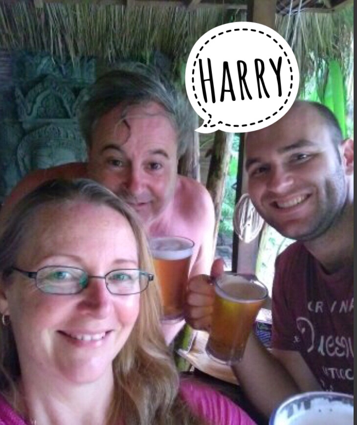
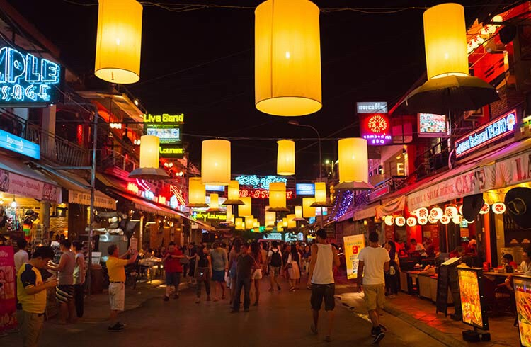
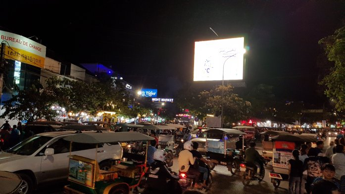
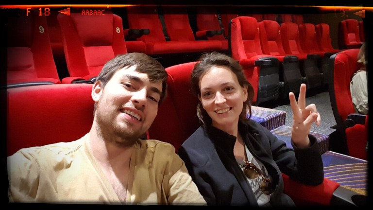

Il viaggio in aereo dalla Thailandia alla Cambogia è stato una chicca. Abbiamo volato con la Bangkok Airways: piccolo aereo versione base-baracca coloratissimo con tutta la carlinga con pesciolini che sembravano disegnati da un bambino di 2 anni e.. ad elica! “Si salvi chi può” diceva il nostro vicino, oppure “l’importante è saper nuotare”… solitamente non ho paura di volare, ma l’effetto “panico di massa” mi deve aver fatto perdere un po’ di lucidità: “Carlo ma io ho il posto 25 e tu il 10, ci hanno separato! Vabbè vado al mio posto…. Ehm, Carlo ma il mio posto non c’è” -> dopo 10 minuti a cercare il sedile fantasma, con tanto di aiuto di una hostess, abbiamo risolto l’arcano: stavo guardando il biglietto aereo sbagliato, quello dalla Malpensa a Bangkok che avevo ancora nel passaporto…
Arrivati alla calorosa e affascinante città di Siem Reap (il cui nome ancora non sappiamo pronunciare), ci attendeva un bel pomeriggio libero e soleggiato. Dato che le principali attrazioni le avremmo pianificate e visitate nei giorni seguenti, abbiamo deciso di andare alla ricerca di un hotel che avesse la piscina al sole per poter fare qualche tuffo.. fu così che, entrando in un hotel e chiedendo se ci fosse la possibilità di fare un bagno pagando qualcosa da bere, ci imbattemmo nel buon Harry, di origine grigionese (Engadina), che a suo tempo decise di consacrare la sua vita all’ozio: “Sono diventato avvocato ma dopo 3 mesi di lavoro mi sono stufato e sono venuto a bere birra e rilassarmi in Cambogia (da ormai 30 anni)“. Un profeta d’altri tempi, insomma, che ci ha mostrato la vera accoglienza cambogiana: birra non stop gratis (se ci rifiutavamo di bere si offendeva) servita dal barista che accorreva ad uno schiocco di dita, tante risate, discorsi che variavano da un alto livello di cultura generale a quelli inerenti la funzionalità che ricoprivano le paperelle a bordo piscina. Abbiamo conosciuto e parlato con molti ospiti dell’hotel provenienti da tutto il mondo, condividendo ciascuno la propria vita e le proprie storie, mentre Harry ci presentava continuando a ripetere: “Loro sono i miei amici svizzeri. Lugano, e il Ticino in generale, è uno dei posti più belli al mondo” (come dargli torto…).
Dopo questo allegro pomeriggio abbiamo cenato, visitato la Pub Street, l’Angkor Night Market
 e… siamo andati al cinema. Chi ci conosce bene sa che siamo degli appassionati.. non potevamo farci mancare l’esperienza del maxi schermo che proiettava il film Downsizing con tanto di sottotitoli cambogiani!

Comment Section